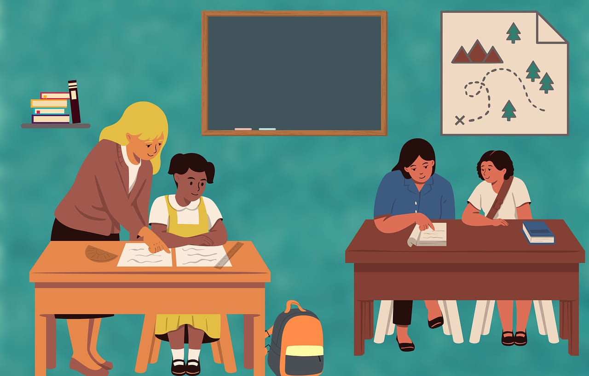
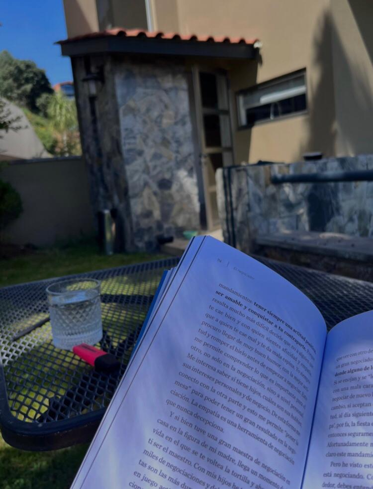
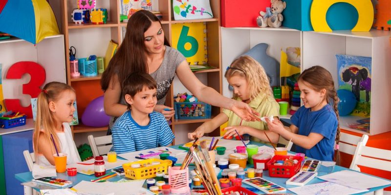

La licenciatura en pedagogía se centra en el estudio de la educación y los procesos de enseñanza-aprendizaje. Los estudiantes aprenden sobre teorías educativas, desarrollo humano, planificación curricular, métodos de enseñanza y evaluación.

Oportunidades laborales:
Los egresados de esta carrera están preparados para trabajar en diversas áreas relacionadas con la educación, como:
Docencia
Orientación educativa
Diseño curricular
Investigación educativa

La Universidad Pedagógica Nacional (UPN) en México tiene como objetivo principal formar profesionales en el ámbito de la educación, que sean capaces de contribuir al desarrollo educativo del país. Sus objetivos específicos incluyen

Desarrollar competencias teóricas y prácticas en los futuros educadores, para que puedan enfrentar los retos del sistema educativo.
Fomentar la investigación en el campo de la educación, promoviendo la generación de conocimiento que mejore las prácticas educativas.
Impulsar el uso de metodologías y enfoques innovadores en la enseñanza, adaptándose a las necesidades cambiantes de la sociedad.